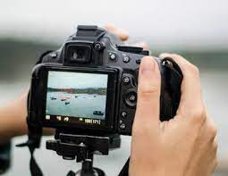
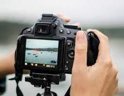

Fine-art photography
Fine-art photography is photography created in line with the vision of the photographer as artist, using photography as a medium for creative expression. The goal of fine-art photography is to express an idea, a message, or an emotion.
Fine-art photography is photography created in line with the vision of the photographer as artist, using photography as a medium for creative expression. The goal of fine-art photography is to express an idea, a message, or an emotion.
Fashion photography
Fashion photography is a genre of photography that portrays clothing and other fashion items. This sometimes includes haute couture garments. It typically consists of a fashion photographer taking pictures of a dressed model in a photographic studio or an outside setting.
Fashion photography is a genre of photography that portrays clothing and other fashion items. This sometimes includes haute couture garments. It typically consists of a fashion photographer taking pictures of a dressed model in a photographic studio or an outside setting.
Digital photography
Digital photography uses cameras containing arrays of electronic photodetectors interfaced to an analog-to-digital converter to produce images focused by a lens, as opposed to an exposure on photographic film. 
Digital photography uses cameras containing arrays of electronic photodetectors interfaced to an analog-to-digital converter to produce images focused by a lens, as opposed to an exposure on photographic film. 
Landscape photography
Landscape photography shows the spaces within the world, sometimes vast and unending, but other times microscopic. Landscape photographs typically capture the presence of nature but can also focus on human-made features or disturbances of landscapes. Landscape photography is done for a variety of reasons.
Landscape photography shows the spaces within the world, sometimes vast and unending, but other times microscopic. Landscape photographs typically capture the presence of nature but can also focus on human-made features or disturbances of landscapes. Landscape photography is done for a variety of reasons.